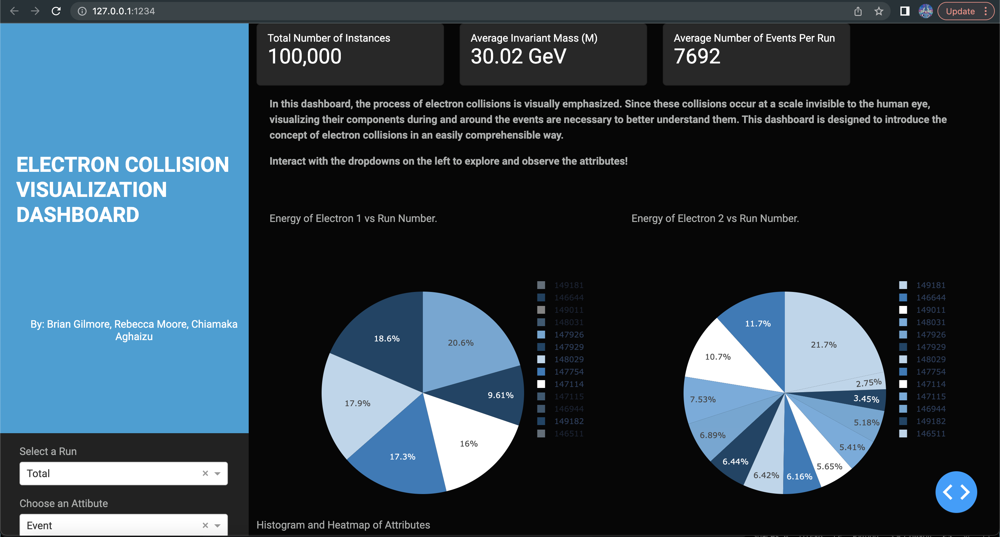
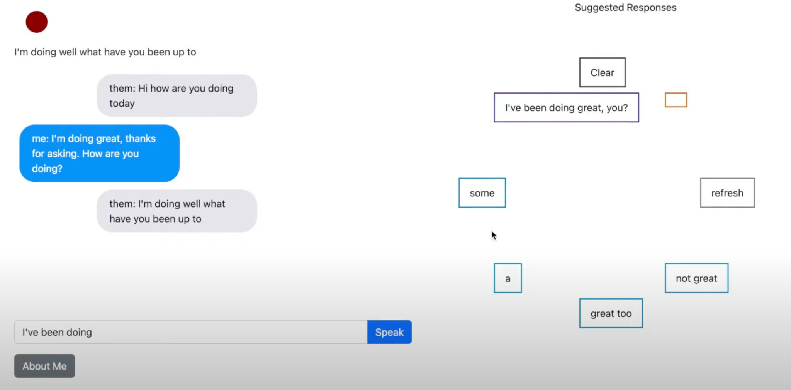

Electron Collision Visualization Dashboard
An interactive Dash app visualizing particle collisions with heatmaps, scatterplots, and pies. Built in Python using Dash and Plotly.

Conversational Assistant for Individuals with Parkinson's Disease
In this project we create a web application that is meant to be a tool for people with disabilities. The app listens to a conversation and suggests responses to the user. It uses 3 seperate models to suggest 3 different types of responses. It uses a conversational model to suggest simple conversational responses. It uses a generative model to suggest next words in custom sentence building. It uses a question answering model to suggest specific answers to questions about the user.